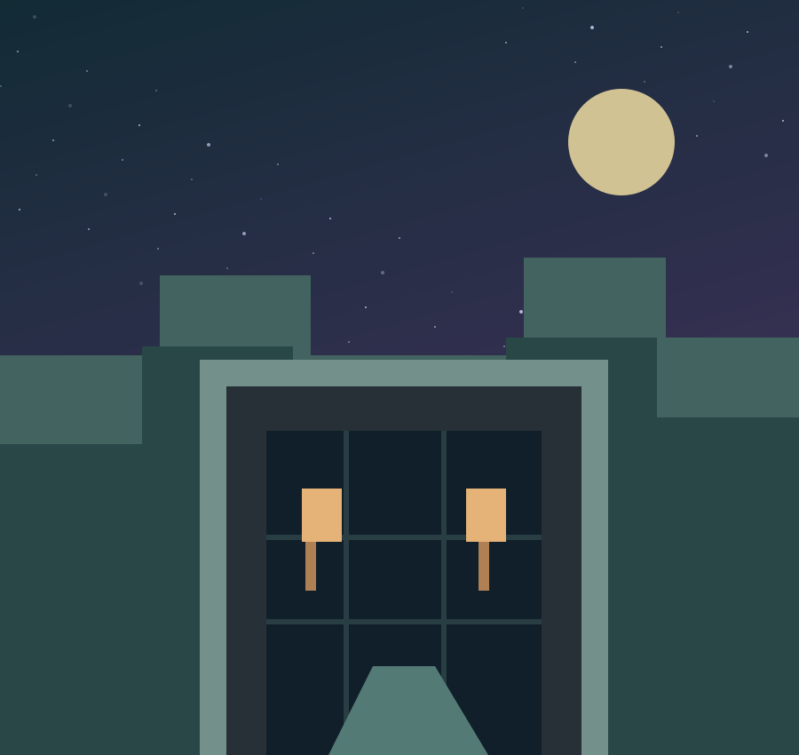

Novidades com contexto e fonte. Uma seleção de acontecimentos do universo dos games para entender como os jogos evoluem.
Arquivo editorial · Os acontecimentos abaixo são de 2024. As datas se referem aos anúncios originais; esta página não é um feed em tempo real.

MINECRAFT ·
Tricky Trials transforma a exploração em desafio
A atualização Tricky Trials foi lançada em 13 de junho de 2024 para as edições Java e Bedrock. As câmaras de desafio colocam combate, armadilhas e recompensas no centro da exploração subterrânea.
O interesse está na mudança de ritmo: entrar em uma estrutura preparada para testar o jogador pede uma abordagem diferente daquela de uma simples coleta de recursos. Para conhecer os recursos da versão, consulte o anúncio da Mojang.
A Hello Games anunciou Worlds Part I em 17 de julho de 2024. A atualização 5.0 renovou elementos da geração de mundos e da apresentação dos ambientes, incluindo água, nuvens e condições atmosféricas.
Em um jogo baseado em descoberta, mudanças na paisagem afetam o próprio motivo para viajar: um horizonte diferente pode ser suficiente para planejar outra expedição. O registro oficial detalha as alterações e ajuda a separar recursos anunciados de expectativas.